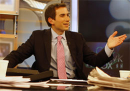

New York Times columnist and author, Andrew Ross Sorkin has been described as the most famous financial journalist of his generation
. His book, Too Big to Fail, was the first book to capture the collapse of major financial institutions during the 2008 crisis.
The Economist, The Financial Times, and BusinessWeek all named Too Big to Fail one of the best books of the year. The book was published by Viking on October 20, 2009.
The cast of the movie: Too Big to Fail
1. William Hurt as Hank Paulson
2. Paul Giamatti as Ben Bernanke
3. Billy Crudup as Timothy Geithner
Movie Reviews
'Lots of heat but not very much light. It came across as a kind of daytime soap opera version showing the personalities of the players rather than dealing with the nuts and bolts of the crisis.'
'I am watching this for the third time, trying to understand how this large group of capitalist pigs could royally screw their families, descendants, neighbors, countrymen and the rest of the world.'